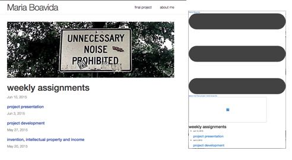

I chose to use Jekyll to create my fabacademy pages, as several online reviews pointed to it as a powerful and easy-to-use static website builder.
There were a few hickups before I could start playing with it: I had to update my OS to the latest Yosemite, and then install Homebrew, Xcode, Ruby, RubyGems and Node JS. I also took some time to learn some of Terminal's basic commands, since I had seldom used it.
Several tutorials later, everything was finally installed and I was ready to start making my Jekyll webiste. Everything seemed pretty straightforward and I soon had a website with working pages for each weekly assignment.
Jekyll's default layout is quite basic so I thought I should try to tweak the html code a bit...and this was when the problems started...finding the html code for each page element was not such a trivial task, as all you you see in the html files in it's template directory is stuff like this:
Time was running short and I decided to just settle with the basic template (and even here, still struggling with a stubborn auto-generated navigation bar). Luís was getting ready to test uploading the site to the fabacademy's archive. And that's when we realized there was another problem:
Gigantic grey bars had grown on my homepage! I decided to have Jekyll build another site with a different bootstrap template (one I have not touched and destroyed, I thought) to see if that one came out ok. this is how it looked before and after Jekyll "built it":
At this point, I decided to kill Jekyll once and for all -- it's clearly not as easy as they say.
At the end, I just downloaded a simple bootstrap template tweaked bits of its html and css and pasted my content on it. I think soon I'll be giving Brackets a try.